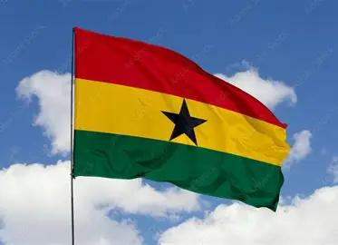

TEYE COLLINS
About Me
Hello! My name is Teye Collins and I am from Accra, Ghana and a student of BYU-Idaho. I enjoy playing soccer, writing, reading and going on adventures. I am currently studying Web Fundamentals and I am excited to be part of this course. I am looking forward to creating new and amazing websites.
Ghana

Ghana is a country in West Africa on the Gulf of Guinea, and its capital is Accra. in 1957 it became the first country in sub-Saharan Africa to gain independence from colonial rule. Ghana is known for it's gold, cocoa, colourful kente cloth, jollof rice and it's football team, the Black Stars. it is also home to Lake Volta, one of the largest man-made lake in the world.